Widgets · Stateless · Stateful · Row · Column · Container · ListTile
StatelessWidget · StatefulWidget · setState() · Row · Column · Container · ListTile
Laporan ini mencakup dua modul praktikum pertama pada mata kuliah Aplikasi Mobile berbasis Flutter. Modul 1 membahas pengenalan widget dasar Flutter yaitu StatelessWidget dan StatefulWidget beserta penerapan setState() untuk UI interaktif. Modul 2 melanjutkan dengan konsep layouting dan styling menggunakan widget Row, Column, Container, dan ListTile untuk membangun tampilan dashboard aplikasi expense tracker.
MaterialApp & Scaffold).StatelessWidget dan StatefulWidget.setState() untuk membangun UI yang interaktif.
StatelessWidget adalah widget statis yang tampilannya tidak pernah berubah setelah dirender di layar. Widget ini tidak memiliki data internal yang dapat berubah (State), lebih ringan dan cepat dibandingkan StatefulWidget. Contoh penggunaannya adalah Label Teks, Ikon, dan Gambar statis. Karena tidak ada perubahan state, StatelessWidget hanya memiliki satu method yaitu build() yang mendeskripsikan tampilan widget tersebut.
StatefulWidget adalah widget dinamis yang tampilannya dapat berubah sebagai respons terhadap interaksi pengguna atau perubahan data. Widget ini menyimpan objek data internal (State) dan dapat merender ulang tampilan melalui setState(). Contoh penggunaannya antara lain Form Input, Checkbox, Counter, dan Animasi. StatefulWidget membutuhkan dua kelas: kelas widget itu sendiri dan kelas State yang menyimpan logika serta data.
| Aspek | StatelessWidget | StatefulWidget |
|---|---|---|
| State internal | Tidak ada | Ada (dapat berubah) |
| Rebuild UI | Tidak bisa | Bisa via setState() |
| Performa | Lebih ringan | Sedikit lebih berat |
| Contoh | Label, Ikon, Gambar | Form, Checkbox, Counter |
Program pertama adalah GreetingWidget, sebuah StatelessWidget yang berfungsi menampilkan sapaan pengguna di bagian atas halaman utama aplikasi. Widget ini tidak memerlukan state karena data yang ditampilkan bersifat statis.
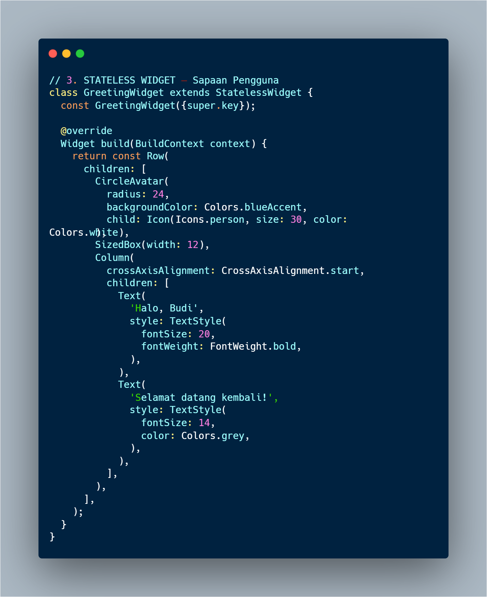
// Kode GreetingWidget — StatelessWidget untuk sapaan pengguna
Widget ini menggunakan Row untuk menyusun elemen secara horizontal. Di sisi kiri terdapat CircleAvatar berisi ikon person berwarna putih dengan latar biru, di sebelahnya terdapat Column yang memuat dua baris teks: teks nama pengguna "Halo, Budi" dengan ukuran 20 dan font tebal, serta teks subjudul "Selamat datang kembali!" berwarna abu-abu berukuran 14. Karena seluruh data bersifat hardcoded dan tidak bergantung pada state apapun, widget ini cukup didefinisikan sebagai StatelessWidget.
Program kedua adalah BalanceCardWidget, sebuah StatefulWidget yang menampilkan kartu saldo. Widget ini bersifat interaktif karena saldo dapat disembunyikan atau ditampilkan saat ikon mata ditekan.
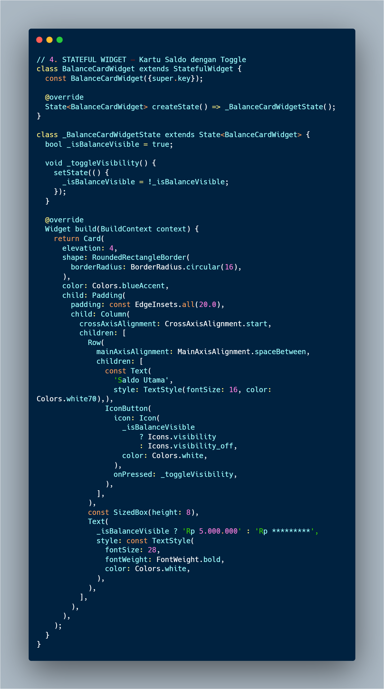
// Kode BalanceCardWidget — StatefulWidget dengan toggle visibility saldo
Class _BalanceCardWidgetState menyimpan satu variabel state yaitu _isBalanceVisible bertipe bool yang nilainya awal true. Method _toggleVisibility() menggunakan setState() untuk membalik nilai boolean tersebut setiap kali dipanggil. Pada method build(), widget Card berwarna biru dibangun menggunakan Padding dan Column. Di baris atas terdapat Row yang memuat teks label "Saldo Utama" dan sebuah IconButton — ikon berganti antara Icons.visibility dan Icons.visibility_off tergantung nilai _isBalanceVisible melalui ternary operator. Teks nominal saldo juga menggunakan ternary: menampilkan "Rp 5.000.000" jika terlihat, atau "Rp *********" jika tersensor.
File main.dart mengintegrasikan seluruh widget menjadi satu aplikasi utuh. MyApp sebagai root StatelessWidget mendefinisikan MaterialApp dengan properti debugShowCheckedModeBanner: false, tema biru, dan DashboardScreen sebagai halaman awal. DashboardScreen adalah StatelessWidget yang membangun Scaffold dengan AppBar bertitel "Praktikum 1: Widgets". Bagian body menggunakan Padding dan Column untuk menumpuk GreetingWidget di atas dan BalanceCardWidget di bawahnya dengan jarak SizedBox(height: 20) di antaranya.
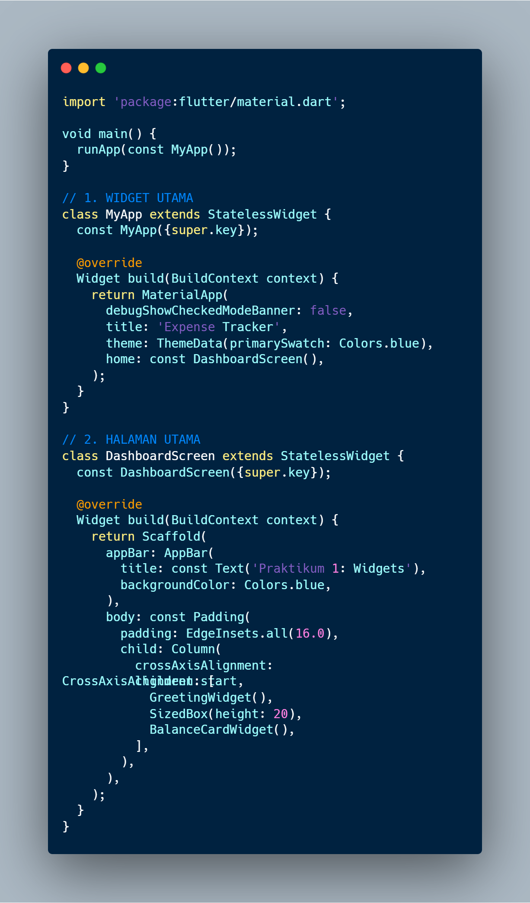
// main.dart lengkap Praktikum 1 — integrasi GreetingWidget dan BalanceCardWidget
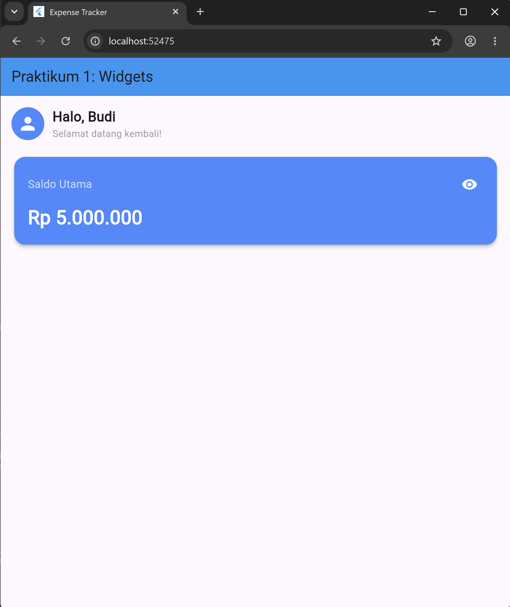
// Tampilan akhir Praktikum 1 — sapaan statis di atas, kartu saldo interaktif di bawah
Tugas pertama adalah mengubah warna tema BalanceCardWidget dari Colors.blueAccent menjadi Colors.teal (hijau emerald). Perubahan dilakukan pada properti color di widget Card dan backgroundColor pada CircleAvatar agar konsisten secara visual.
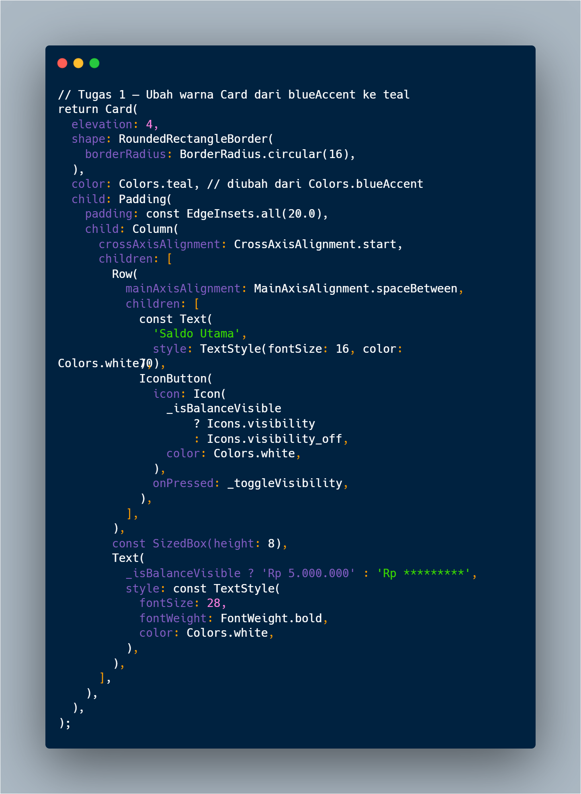
// Perubahan warna card dari Colors.blueAccent ke Colors.teal
Tugas kedua adalah menambahkan teks statis "No. Rekening: 1234-5678" di bagian bawah nominal saldo di dalam BalanceCardWidget. Teks ini ditambahkan sebagai widget Text baru setelah widget nominal saldo, di dalam Column yang sama, dengan warna Colors.white70 dan ukuran font 13 agar tidak mendominasi tampilan.
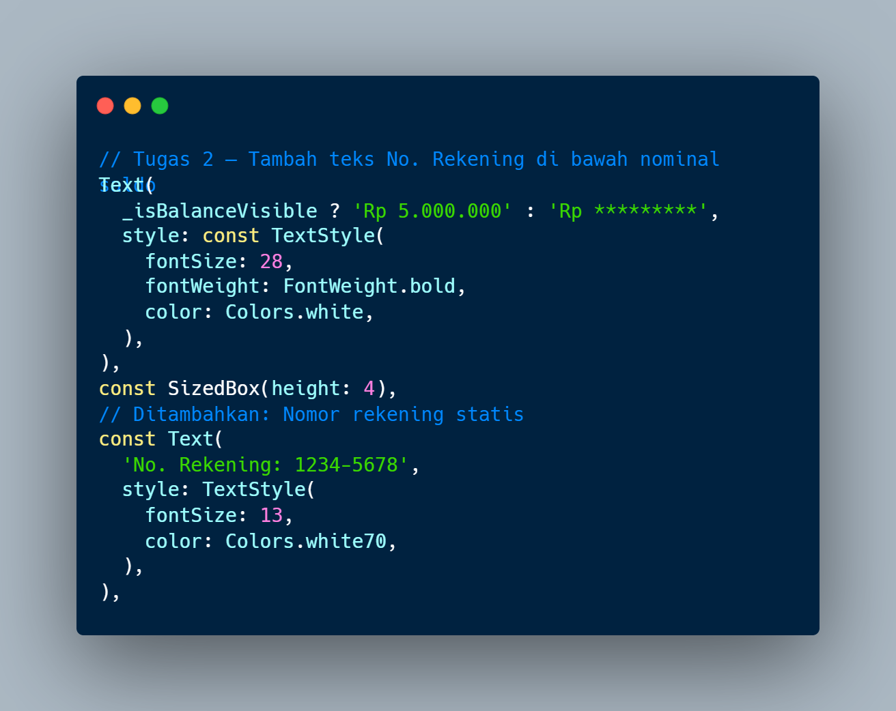
// Penambahan teks nomor rekening statis di bawah nominal saldo
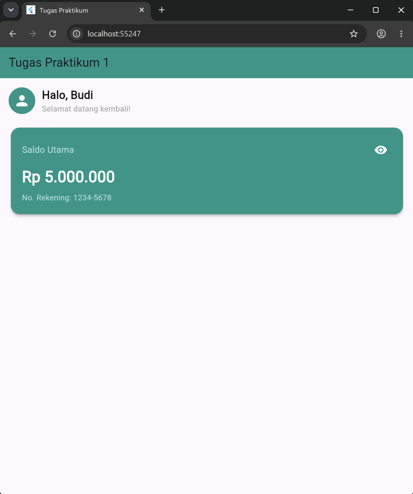
// Hasil akhir tugas: card hijau teal dengan nomor rekening di bawah saldo
Row untuk menyusun deretan tombol aksi secara horizontal.Column untuk menyusun daftar transaksi secara vertikal.padding, margin, dan warna menggunakan widget Container.
Row adalah widget layout yang menyusun children secara horizontal dari kiri ke kanan. Properti utama yang sering digunakan adalah mainAxisAlignment untuk mengatur distribusi ruang horizontal (misalnya spaceEvenly untuk membagi jarak secara merata) dan crossAxisAlignment untuk mengatur perataan vertikal antar child.
Column adalah widget layout yang menyusun children secara vertikal dari atas ke bawah. Column adalah pasangan Row — jika Row untuk horizontal, Column untuk vertikal. Properti crossAxisAlignment mengatur perataan horizontal child, sedangkan mainAxisAlignment mengatur distribusi ruang vertikal.
Container adalah widget kotak serbaguna yang dapat menambahkan padding, margin, warna latar, dan batas (border) pada satu widget. Container digunakan untuk membungkus ikon tombol aksi agar mendapatkan latar berwarna dengan sudut melengkung menggunakan BoxDecoration.
ListTile adalah widget bawaan Material Design untuk membuat satu baris daftar yang rapi secara instan. Memiliki tiga slot utama: leading (elemen paling kiri, biasanya ikon atau avatar), title dan subtitle (judul dan subjudul baris), serta trailing (elemen paling kanan, biasanya teks nominal atau tombol).
| Widget | Arah Susun | Kegunaan Utama |
|---|---|---|
Row |
Horizontal (kiri → kanan) | Tombol sejajar, ikon sejajar |
Column |
Vertikal (atas → bawah) | Daftar item, susun elemen |
Container |
Kotak pembungkus | Padding, margin, warna, dekorasi |
ListTile |
Baris daftar | Item transaksi, menu, kontak |
Program pertama pada Modul 2 adalah ActionButtonsWidget, sebuah StatelessWidget yang menyusun tiga tombol aksi (Pemasukan, Pengeluaran, Transfer) secara horizontal menggunakan widget Row.
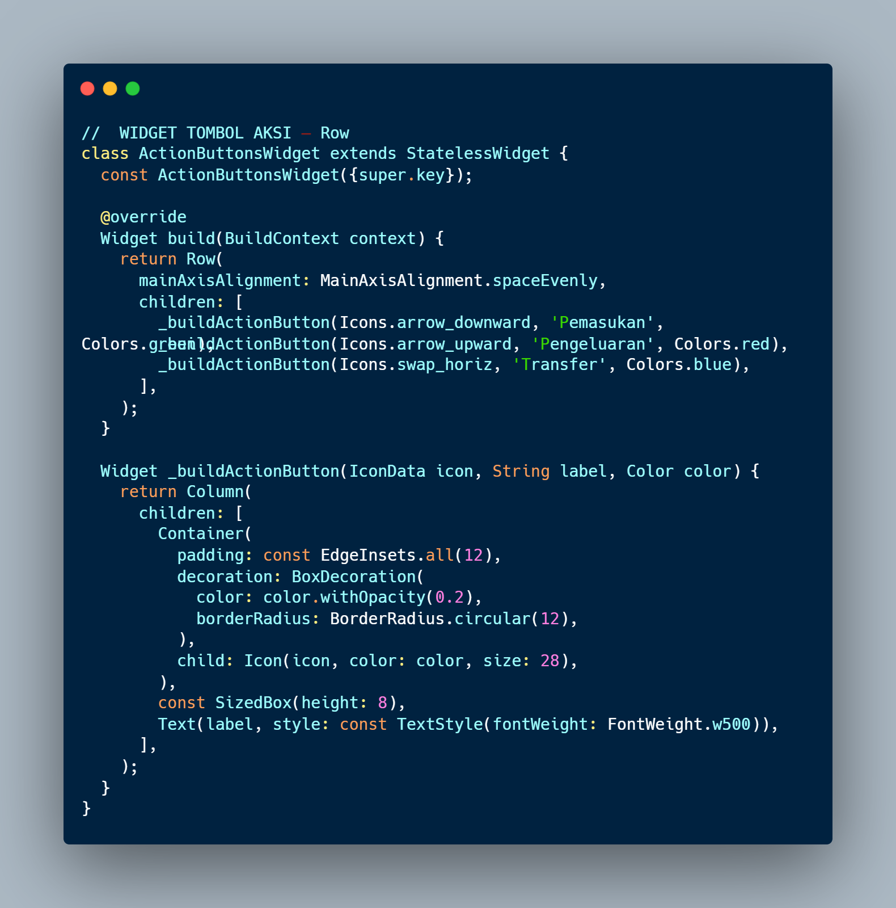
// Kode ActionButtonsWidget — Row dengan tiga tombol aksi sejajar horizontal
Widget Row menggunakan mainAxisAlignment: MainAxisAlignment.spaceEvenly agar ketiga tombol terdistribusi merata secara horizontal. Masing-masing tombol dibangun oleh helper method _buildActionButton(IconData, String, Color) yang mengembalikan sebuah Column berisi Container dan Text. Container membungkus Icon dengan padding 12 pixel dan BoxDecoration yang memberikan warna transparan (menggunakan withOpacity(0.2)) serta sudut melengkung (BorderRadius.circular(12)). Pendekatan helper method ini menghindari pengulangan kode karena struktur ketiga tombol identik, hanya berbeda pada ikon, label, dan warna.
Program kedua adalah RecentTransactionsWidget, sebuah StatelessWidget yang menampilkan daftar transaksi terakhir menggunakan kombinasi Column dan ListTile.
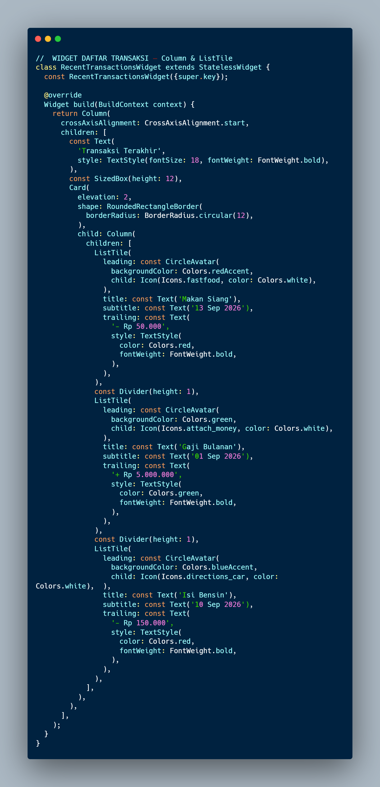
// Kode RecentTransactionsWidget — Column + ListTile untuk daftar riwayat transaksi
Widget ini menggunakan Column sebagai wadah utama dengan crossAxisAlignment: CrossAxisAlignment.start. Teks judul "Transaksi Terakhir" ditampilkan dengan font tebal berukuran 18. Di bawahnya terdapat sebuah Card dengan elevation: 2 dan sudut melengkung yang membungkus Column kedua berisi deretan item ListTile. Setiap ListTile memiliki leading berupa CircleAvatar berwarna sesuai jenis transaksi, title nama transaksi, subtitle tanggal, dan trailing nominal dengan warna merah untuk pengeluaran dan hijau untuk pemasukan. Di antara setiap ListTile ditambahkan Divider(height: 1) sebagai pemisah visual.
Pada Modul 2, DashboardScreen diperbarui untuk mengintegrasikan komponen dari Modul 1 (GreetingWidget, BalanceCardWidget) dengan komponen baru (ActionButtonsWidget, RecentTransactionsWidget). Karena total konten sudah cukup panjang untuk melampaui tinggi layar, seluruh Column dibungkus dengan SingleChildScrollView agar pengguna dapat meng-scroll konten ke bawah tanpa terjadi overflow.
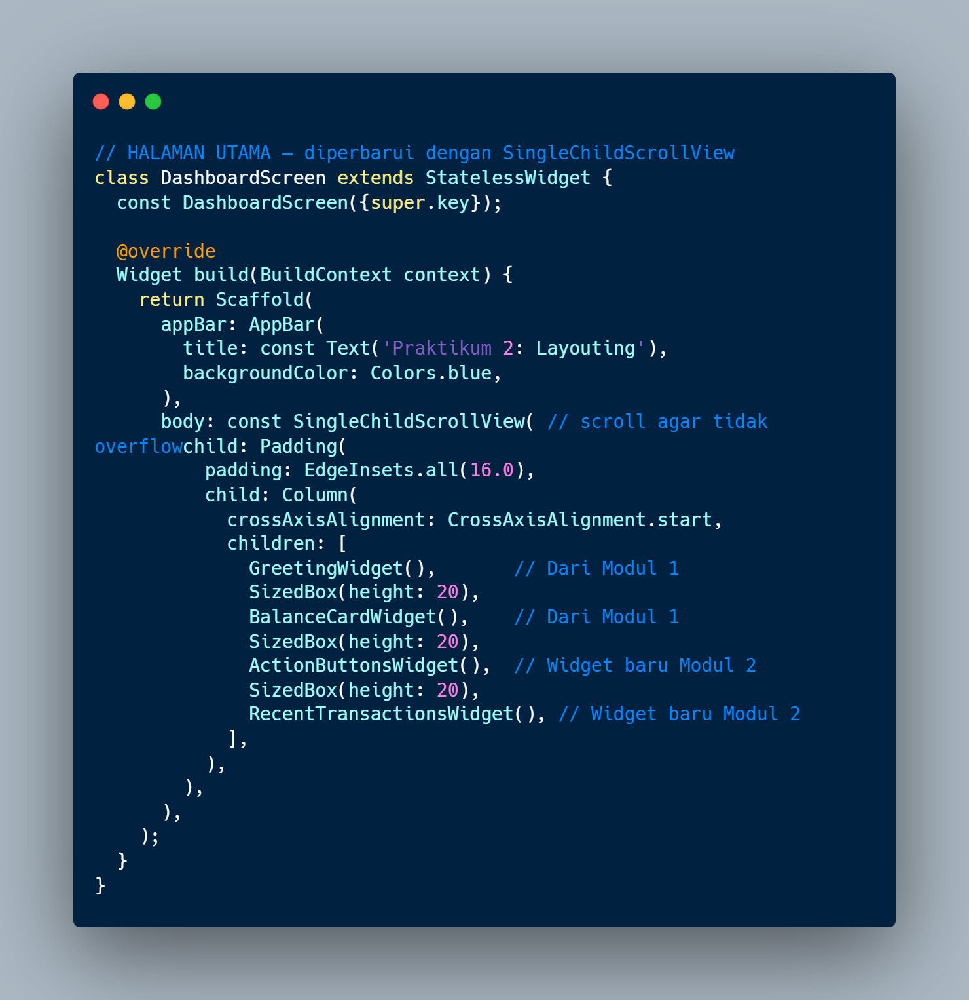
// Kode DashboardScreen yang diperbarui — SingleChildScrollView membungkus seluruh Column
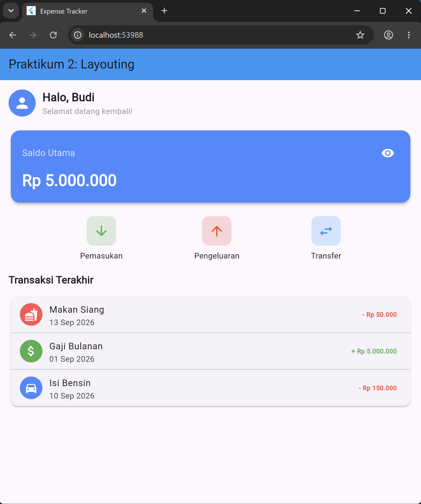
// Tampilan akhir dashboard: sapaan, kartu saldo, tombol aksi, dan daftar transaksi
Tugas pertama adalah memastikan warna teks trailing pada setiap ListTile konsisten: teks pengeluaran berwarna merah (Colors.red) dan teks pemasukan berwarna hijau (Colors.green). Hal ini sudah diterapkan pada source code utama. Setiap ListTile pengeluaran menggunakan TextStyle(color: Colors.red, fontWeight: FontWeight.bold) sedangkan pemasukan menggunakan TextStyle(color: Colors.green, fontWeight: FontWeight.bold).
Tugas kedua adalah menambahkan 2 transaksi fiktif baru di bawah transaksi yang sudah ada. Dua transaksi baru yang ditambahkan adalah "Beli Buku" (pengeluaran Rp 75.000, ikon Icons.book) dan "Freelance Project" (pemasukan Rp 500.000, ikon Icons.laptop), masing-masing dilengkapi Divider dan warna trailing yang sesuai.
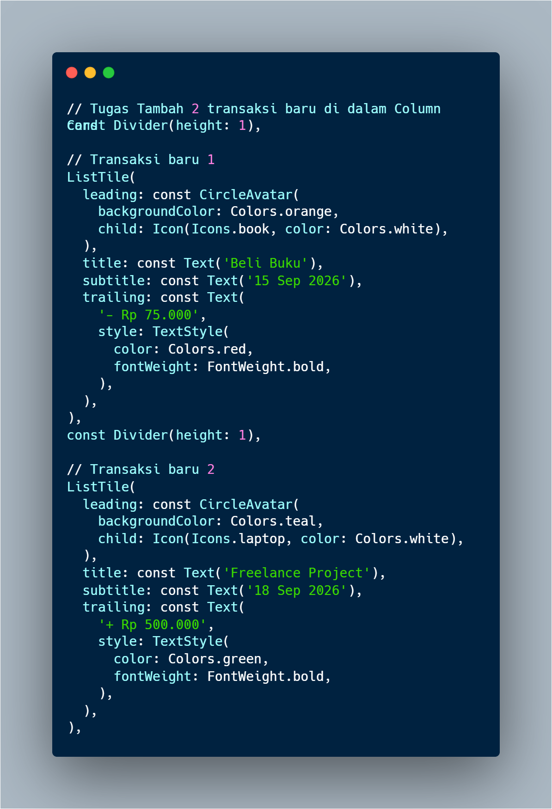
// Penambahan 2 ListTile transaksi baru: Beli Buku dan Freelance Project
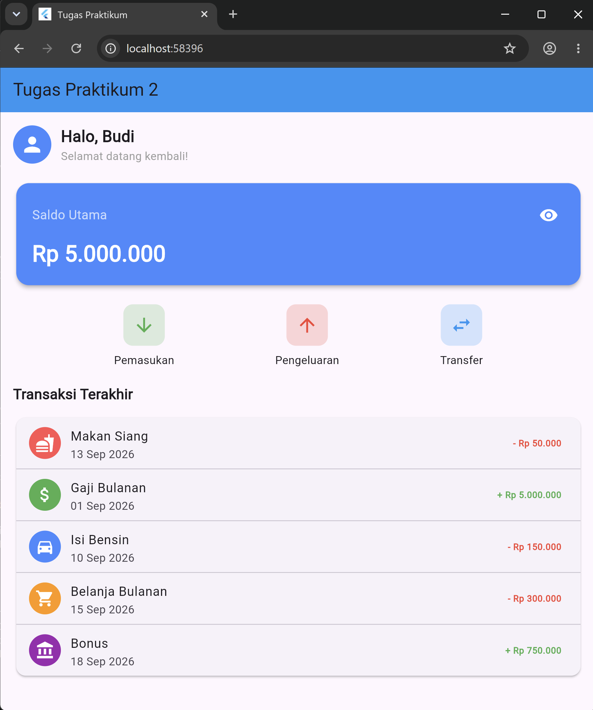
// Hasil akhir tugas: daftar transaksi bertambah menjadi 5 item dengan warna trailing konsisten
Dari Praktikum 1 dipahami bahwa StatelessWidget digunakan untuk komponen yang tidak bergantung pada data yang berubah, sedangkan StatefulWidget digunakan ketika tampilan perlu merespons interaksi pengguna. Mekanisme setState() menjadi jembatan antara perubahan data dan pembaruan tampilan — tanpa setState(), perubahan variabel state tidak akan memperbarui UI secara otomatis. Pemilihan yang tepat antara keduanya sangat berpengaruh pada efisiensi performa aplikasi.
Dari Praktikum 2 dipahami bahwa Flutter menyediakan widget layout yang sangat spesifik dan komposabel: Row untuk horizontal, Column untuk vertikal, Container untuk dekorasi dan pemberian ruang, serta ListTile untuk membuat baris daftar yang terstruktur. Kombinasi widget-widget ini memungkinkan pembangunan layout yang kompleks secara deklaratif dan mudah dibaca. Penggunaan SingleChildScrollView menunjukkan pentingnya menangani overflow secara eksplisit ketika konten berpotensi melampaui tinggi layar.
Secara keseluruhan, kedua modul ini membentuk fondasi yang kuat dalam pengembangan Flutter: memahami siklus hidup widget (Stateless vs Stateful), menguasai tata letak dasar (Row, Column, Container), dan menggunakan komponen Material Design siap pakai (ListTile, Card, AppBar) secara efektif.